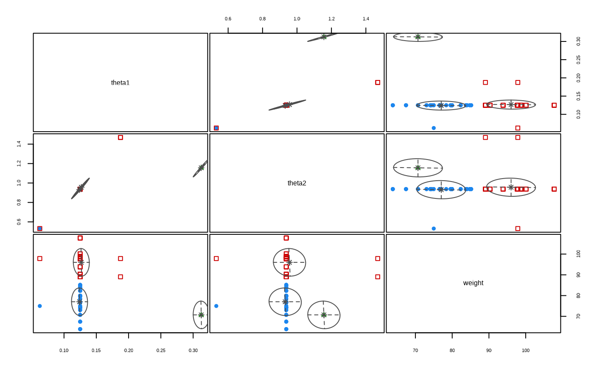
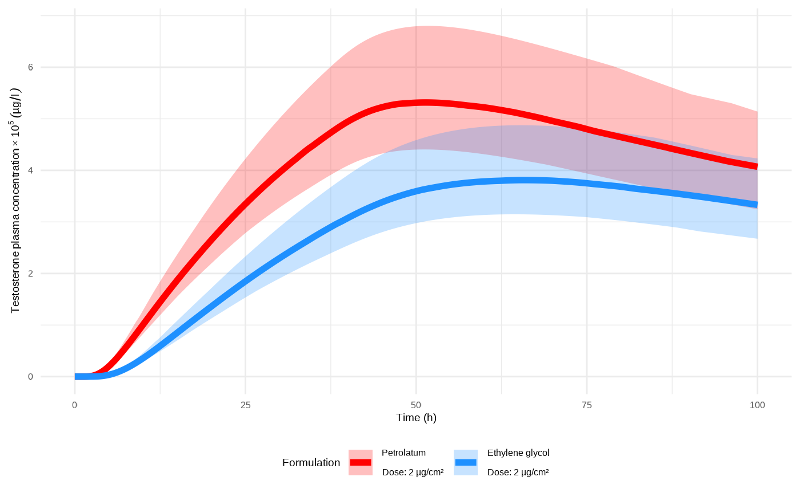
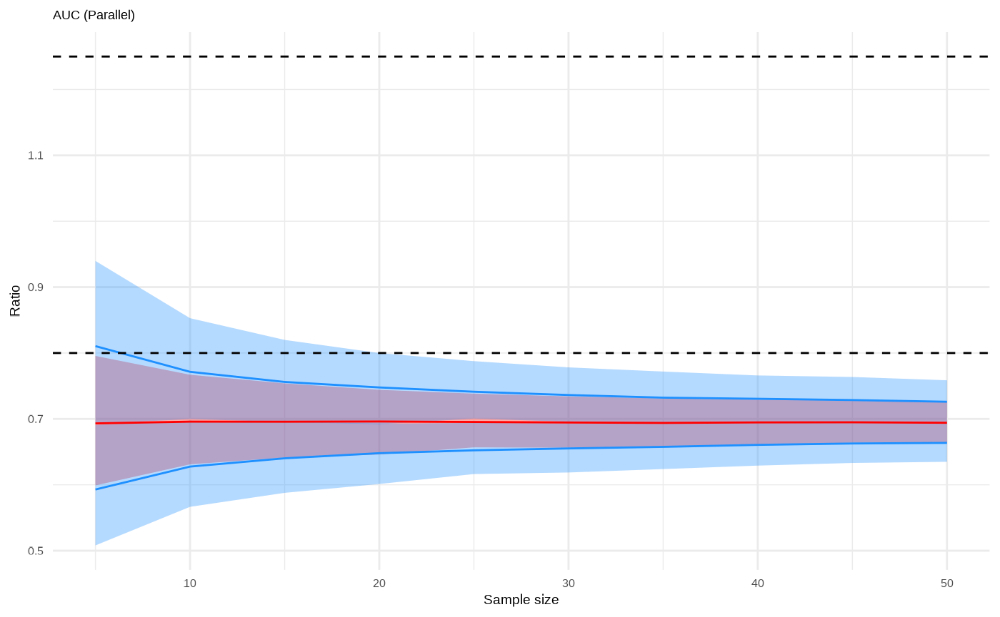
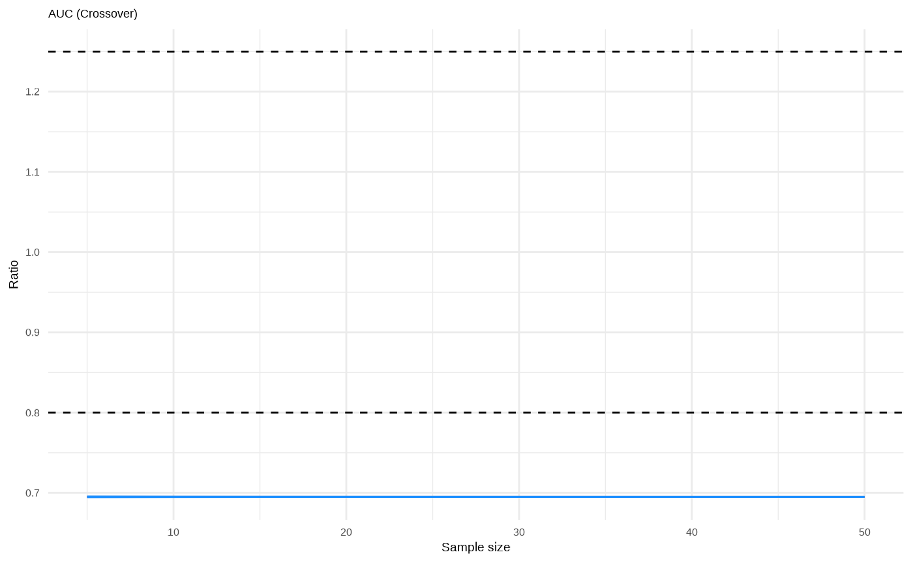
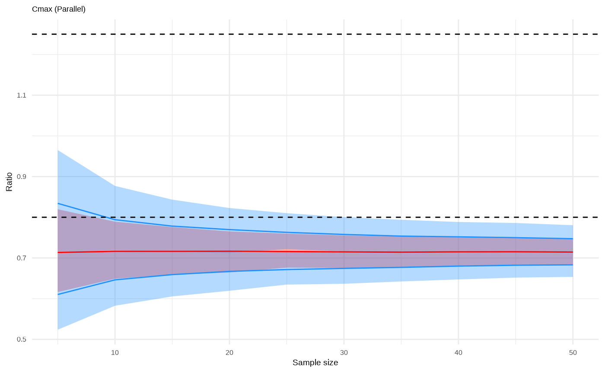
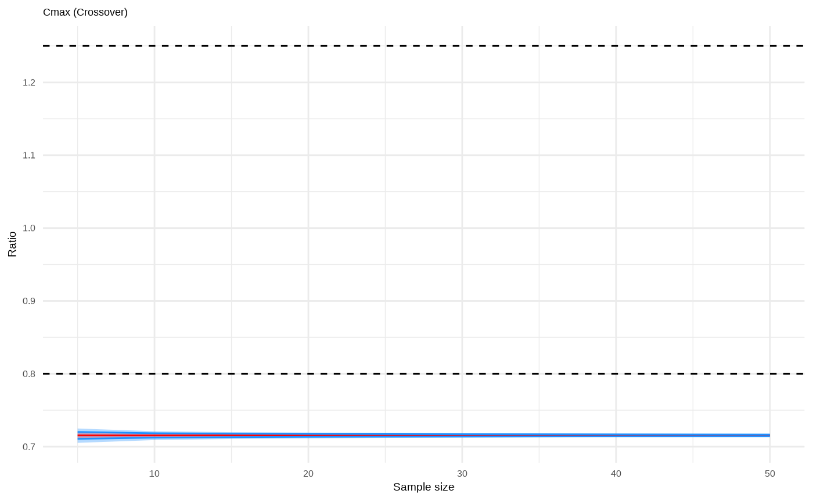
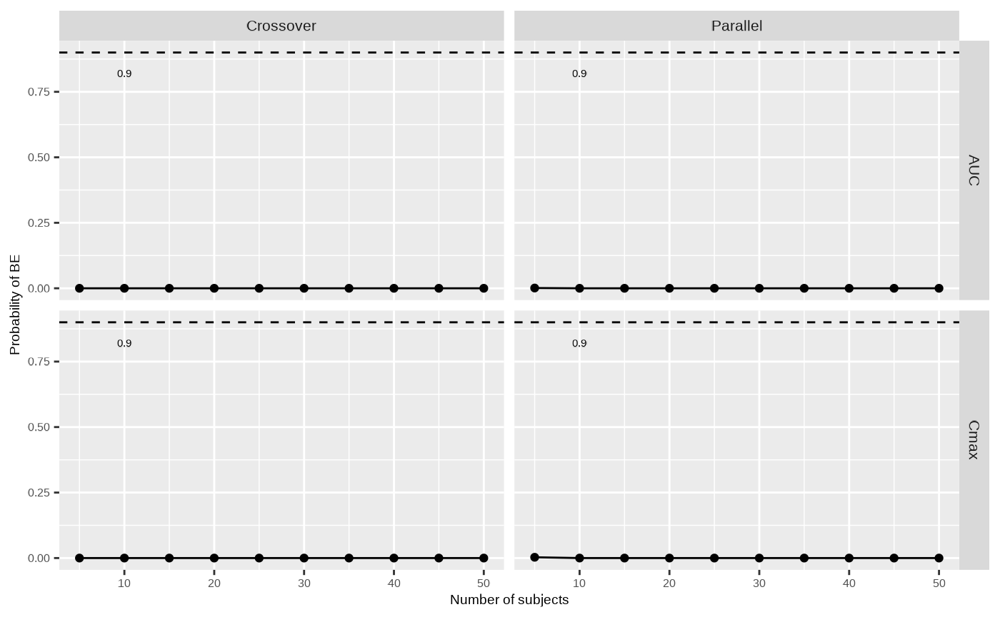

Testosterone dermal absorption model case study
The absorption of active ingredients applied to the skin is heavily influenced by the choice of vehicle [9-12]. Differences in skin permeation arise due to variation in how the active ingredient partitions from a formulation into the skin, and also due to inactive ingredients in the formulation that can alter diffusivity across the skin strata [13]. Mechanistic models of dermal absorption of small molecules from dermal formulations have been developed by the Kasting group [14, 15] and have been translated into open source implementations in the OSP Suite quantitative systems pharmacology modeling platform, MoBi® [16]. Subsequently, the MoBi® implementation has been used to develop a dermal model Bayesian IVIVE workflow [17] and to develop a model of UV filter absorption and systemic exposure following sunscreen applications [18].
The MoBi® implementation mentioned above describes the permeation of compounds from a vehicle deposited on the skin surface into the stratum corneum, the viable epidermis, and the dermis. Clearance from the dermis can be modeled as being into a receptor fluid medium when simulating in vitro skin permeation tests, or into systemic circulation when simulating in vivo dermal absorption. To simulate the disposition of dermally applied compounds following their absorption into systemic circulation, the MoBi® model can also be appended to PK-Sim® PBPK whole-body PBPK models or, as in the case of Hamadeh et al. [18], it can be appended to one- or two-compartment models. Further details on model structure, assumptions and development are provided in Supplementary Materials 1.
This case study uses an integrated model consisting of the MoBi® dermal absorption model appended to a single systemic compartment to assess VBE between two topical testosterone formulations. The one-compartment systemic model is parameterized by the apparent clearance and volume of distribution of testosterone reported in Bi et al. [19]. The two testosterone formulations are those studied in Bronaugh & Franz [9]. That work reported the skin absorption flux rates for testosterone when applied to human skin under both in vitro and in vivo settings in a petrolatum vehicle and in an ethylene glycol gel vehicle. The applied vehicle mass per unit area was 25 mg/cm2 in all four cases, and the testosterone dose within the vehicles was 2 μg/cm2 for all applications except the ethylene glycol application to in vivo skin, which was applied at a dose of 3 μg/cm2. Here, the proposed workflow is applied towards VBE assessments of the petrolatum (assumed to be the R product) formulation and the ethylene glycol (assumed to be the T product) formulation and will be assessed at a testosterone strength of 2 μg/cm2, applied in a 25 mg/cm2 vehicle.
Dermal application case study data sets
As Bronaugh & Franz [9] did not provide testosterone plasma concentration data for subjects treated with the petrolatum formulation, for the purposes of this case study, we used their reported testosterone dermal absorption rate along with the testosterone systemic clearance and volume of distribution values from Bi et al. [19], to generate simulated plasma concentration profiles as described in Supplementary Materials 1. These individualized profiles are used as data set D1 for this illustrative example, and each profile is associated with a virtual individual characterized by body weight. The collective body weights of all virtual individuals in this example constitute data set D2. The distribution of body weights is derived from Bi et al. [19].
openVBE code
The following code gets the Data sets D1 and D2 from
pkDataFilePath = "pk_data_reference.csv" and
studyPopulationDataFilePath = "population_data.csv"
respectively.
library(openVBE)
#> Loading required package: ospsuite
#> Loading required package: rSharp
#> Loading required package: mclust
#> Package 'mclust' version 6.1.1
#> Type 'citation("mclust")' for citing this R package in publications.
#> Warning: replacing previous import 'stats::filter' by 'dplyr::filter' when
#> loading 'openVBE'
dateTime <- paste0(format(Sys.Date(), "%Y%m%d"), "_", format(Sys.time(), "%H%M%S"))
exampleName <- "testosterone-dermal"
subfolder <- system.file("examples", exampleName, package="openVBE")
# D1
pkDataFilePath <- file.path(subfolder, "pk_data_reference.csv")
# D2
studyPopulationDataFilePath <- file.path(subfolder,"population_data.csv")Step W1 - PK model development
The MoBi® skin absorption model [16] was optimized, as described in Supplementary Materials 1, to the in vitro testosterone absorption measurements reported for the petrolatum and ethylene glycol vehicles in Bronaugh & Franz [9] and then externally validated against the in vivo testosterone absorption rates following application in the petrolatum vehicle. Two vehicle -specific parameters were optimized based on the in vitro data: the vehicle/stratum corneum partition coefficient, , and the vehicle-specific effect on testosterone permeability across stratum corneum lipid bilayers, .
Once validated, the resulting testosterone dermal absorption model was appended to a single systemic compartment to represent in vivo systemic concentrations following absorption from skin. The nominal values of testosterone clearance and volume of distribution for the systemic compartment were adopted from Bi et al. [19]. Two such in vivo testosterone dermal absorption models were constructed, one for each vehicle. The testosterone systemic disposition in these two models was assumed to be the same, and the only differences between them lay in their respective values of the optimized vehicle-specific parameters, and .
Step W2 - Learning posterior distributions of IIV and IVIVE parameters
Based on sensitivity analyses conducted in Hamadeh et al. [17] on the MoBi® skin absorption model, permeability across stratum corneum lipid bilayers () was identified as an influential parameter in the dermal absorption of testosterone. An additive individual-specific perturbation to , ranging within , was selected for inference from the data set D1. Also selected for inference from this data set is a scaling parameter, and and the demographic description of the virtual population, which, in this example, consists of the individual weight. The posterior probability of each support point is given by the point color.
openVBE code
outputPath <- "DERMAL_APPLICATION_AREA|in_vivo_sink|permeant|whole_body_concentration"
uncertainty_logktrans <- vbeParameter(
pathInReferenceSimulation = "permeant|uncertainty_logktrans",
pathInTestSimulation = "permeant|uncertainty_logktrans",
displayName = "uncertainty_logktrans",
dimension = ospDimensions$Dimensionless,
unit = ospUnits$Dimensionless$Unitless,
lowerBound = -1,
upperBound = 1,
logIncrement = FALSE
)
scaling_total_clearance <- vbeParameter(
pathInReferenceSimulation = "in_vivo_sink_clearance|scaling_total_clearance",
pathInTestSimulation = "in_vivo_sink_clearance|scaling_total_clearance",
displayName = "scaling_total_clearance",
dimension = ospDimensions$Dimensionless,
unit = ospUnits$Dimensionless$Unitless,
lowerBound = 0.5,
upperBound = 1.5,
logIncrement = FALSE
)
inferenceParameters <- list(uncertainty_logktrans, scaling_total_clearance)
cofactorPaths <- list(weight = "DERMAL_APPLICATION_AREA|in_vivo_sink|body_weight")Learns the posterior distributions of
uncertainty_logktrans,
scaling_total_clearance, and weight IIV
parameters and cofactors.
inferredDistribution <- runDistributionInference(
method = "NPOD",
referenceSimulationFilePath = referenceSimulationFilePath,
outputPath = outputPath,
pkDataFilePath = pkDataFilePath,
studyPopulationDataFilePath = studyPopulationDataFilePath,
cofactorPaths = cofactorPaths,
inferenceParameters = inferenceParameters,
initialGridSize = 40,
numberOfIterations = 10,
useLogNormalLikelihood = TRUE,
saveResultsPath = paste0(exampleName,"-npod-results-",dateTime,".rds"),
cacheFolder = "cacheFolder"
)
#> [1] "Starting NPOD"
#> [1] "Starting optimization run:"
#> [1] "theta:"
#> [,1] [,2] [,3] [,4] [,5] [,6] [,7] [,8] [,9] [,10] [,11]
#> [1,] 0 -0.50 0.50 -0.750 0.250 -0.250 0.750 -0.8750 0.1250 -0.3750 0.6250
#> [2,] 1 1.25 0.75 1.125 0.625 0.875 1.375 1.4375 0.9375 0.6875 1.1875
#> [,12] [,13] [,14] [,15] [,16] [,17] [,18] [,19] [,20]
#> [1,] -0.6250 0.3750 -0.1250 0.8750 -0.93750 0.06250 -0.43750 0.56250 -0.68750
#> [2,] 0.8125 1.3125 1.0625 0.5625 1.03125 0.53125 0.78125 1.28125 0.65625
#> [,21] [,22] [,23] [,24] [,25] [,26] [,27] [,28]
#> [1,] 0.31250 -0.18750 0.81250 -0.81250 0.18750 -0.31250 0.68750 -0.56250
#> [2,] 1.15625 1.40625 0.90625 0.96875 1.46875 1.21875 0.71875 1.34375
#> [,29] [,30] [,31] [,32] [,33] [,34] [,35] [,36]
#> [1,] 0.43750 -0.06250 0.93750 -0.968750 0.031250 -0.468750 0.531250 -0.718750
#> [2,] 0.84375 0.59375 1.09375 1.296875 0.796875 0.546875 1.046875 0.921875
#> [,37] [,38] [,39] [,40]
#> [1,] 0.281250 -0.218750 0.781250 -0.843750
#> [2,] 1.421875 1.171875 0.671875 0.734375
#> [1] "lambda:"
#> [1] 0.025 0.025 0.025 0.025 0.025 0.025 0.025 0.025 0.025 0.025 0.025 0.025
#> [13] 0.025 0.025 0.025 0.025 0.025 0.025 0.025 0.025 0.025 0.025 0.025 0.025
#> [25] 0.025 0.025 0.025 0.025 0.025 0.025 0.025 0.025 0.025 0.025 0.025 0.025
#> [37] 0.025 0.025 0.025 0.025
#> [1] "After Condense 2"
#> [1] "theta:"
#> [,1] [,2] [,3] [,4] [,5] [,6] [,7] [,8] [,9]
#> [1,] 0 0.250 0.1250 0.3750 0.06250 0.31250 0.18750 -0.06250 0.031250
#> [2,] 1 0.625 0.9375 1.3125 0.53125 1.15625 1.46875 0.59375 0.796875
#> [,10]
#> [1,] 0.281250
#> [2,] 1.421875
#> [1] "lambda:"
#> [1] 0.002411838 0.001413493 0.952626201 0.001155724 0.008029559 0.002474677
#> [7] 0.015833738 0.001166835 0.006807033 0.006724929
#> [1] "After Condense 2"
#> [1] "theta:"
#> [,1] [,2] [,3] [,4] [,5] [,6] [,7] [,8] [,9]
#> [1,] 0 0.250 0.1250 0.3750 0.06250 0.31250 0.18750 -0.06250 0.031250
#> [2,] 1 0.625 0.9375 1.3125 0.53125 1.15625 1.46875 0.59375 0.796875
#> [,10]
#> [1,] 0.281250
#> [2,] 1.421875
#> [1] "lambda:"
#> [1] 0.002791402 0.001978164 0.956164132 0.001747391 0.006934266 0.002839938
#> [7] 0.013811496 0.001757617 0.006018121 0.005957472
#> [1] "Starting fminsearch and prune"
#> [1] "Starting fminsearch..."
#> [1] 1
#> [,1] [,2] [,3] [,4] [,5] [,6] [,7] [,8] [,9]
#> [1,] 0 0.250 0.1250 0.3750 0.06250 0.31250 0.18750 -0.06250 0.031250
#> [2,] 1 0.625 0.9375 1.3125 0.53125 1.15625 1.46875 0.59375 0.796875
#> [,10]
#> [1,] 0.281250
#> [2,] 1.421875
#> fminsearch: Exiting: Maximum number of iterations has been exceeded
#> - increase MaxIter option.
#> Current function value: -0.00103867975222016
#> [1] "fminserarch complete"
#> [1] "prune..."
#> [1] "Rejecting candidate support point: (-1.41697265625, 8.86083984375002)."
#> [1] "Reason: Outside of bounds."
#> [1] "...complete."
#> [,1] [,2] [,3] [,4] [,5] [,6] [,7] [,8] [,9]
#> [1,] 0 0.250 0.1250 0.3750 0.06250 0.31250 0.18750 -0.06250 0.031250
#> [2,] 1 0.625 0.9375 1.3125 0.53125 1.15625 1.46875 0.59375 0.796875
#> [,10]
#> [1,] 0.281250
#> [2,] 1.421875
#> [1] "Starting fminsearch..."
#> [1] 2
#> [,1] [,2] [,3] [,4] [,5] [,6] [,7] [,8] [,9]
#> [1,] 0 0.250 0.1250 0.3750 0.06250 0.31250 0.18750 -0.06250 0.031250
#> [2,] 1 0.625 0.9375 1.3125 0.53125 1.15625 1.46875 0.59375 0.796875
#> [,10]
#> [1,] 0.281250
#> [2,] 1.421875
#> fminsearch: Exiting: Maximum number of iterations has been exceeded
#> - increase MaxIter option.
#> Current function value: -0.000387362115009893
#> [1] "fminserarch complete"
#> [1] "prune..."
#> [1] "Rejecting candidate support point: (2.21520996093751, -5.279052734375)."
#> [1] "Reason: Outside of bounds."
#> [1] "...complete."
#> [,1] [,2] [,3] [,4] [,5] [,6] [,7] [,8] [,9]
#> [1,] 0 0.250 0.1250 0.3750 0.06250 0.31250 0.18750 -0.06250 0.031250
#> [2,] 1 0.625 0.9375 1.3125 0.53125 1.15625 1.46875 0.59375 0.796875
#> [,10]
#> [1,] 0.281250
#> [2,] 1.421875
#> [1] "Starting fminsearch..."
#> [1] 3
#> [,1] [,2] [,3] [,4] [,5] [,6] [,7] [,8] [,9]
#> [1,] 0 0.250 0.1250 0.3750 0.06250 0.31250 0.18750 -0.06250 0.031250
#> [2,] 1 0.625 0.9375 1.3125 0.53125 1.15625 1.46875 0.59375 0.796875
#> [,10]
#> [1,] 0.281250
#> [2,] 1.421875
#> fminsearch: Exiting: Maximum number of iterations has been exceeded
#> - increase MaxIter option.
#> Current function value: -0.000260332171183819
#> [1] "fminserarch complete"
#> [1] "prune..."
#> [1] "Rejecting candidate support point: (0.675634765624995, -5.3642578125)."
#> [1] "Reason: Outside of bounds."
#> [1] "...complete."
#> [,1] [,2] [,3] [,4] [,5] [,6] [,7] [,8] [,9]
#> [1,] 0 0.250 0.1250 0.3750 0.06250 0.31250 0.18750 -0.06250 0.031250
#> [2,] 1 0.625 0.9375 1.3125 0.53125 1.15625 1.46875 0.59375 0.796875
#> [,10]
#> [1,] 0.281250
#> [2,] 1.421875
#> [1] "Starting fminsearch..."
#> [1] 4
#> [,1] [,2] [,3] [,4] [,5] [,6] [,7] [,8] [,9]
#> [1,] 0 0.250 0.1250 0.3750 0.06250 0.31250 0.18750 -0.06250 0.031250
#> [2,] 1 0.625 0.9375 1.3125 0.53125 1.15625 1.46875 0.59375 0.796875
#> [,10]
#> [1,] 0.281250
#> [2,] 1.421875
#> Timing stopped at: 5.208 0.018 1.995
#> [1] "fminserarch complete"
#> [1] "prune..."
#> [1] "...complete."
#> [,1] [,2] [,3] [,4] [,5] [,6] [,7] [,8] [,9]
#> [1,] 0 0.250 0.1250 0.3750 0.06250 0.31250 0.18750 -0.06250 0.031250
#> [2,] 1 0.625 0.9375 1.3125 0.53125 1.15625 1.46875 0.59375 0.796875
#> [,10]
#> [1,] 0.281250
#> [2,] 1.421875
#> [1] "Starting fminsearch..."
#> [1] 5
#> [,1] [,2] [,3] [,4] [,5] [,6] [,7] [,8] [,9]
#> [1,] 0 0.250 0.1250 0.3750 0.06250 0.31250 0.18750 -0.06250 0.031250
#> [2,] 1 0.625 0.9375 1.3125 0.53125 1.15625 1.46875 0.59375 0.796875
#> [,10]
#> [1,] 0.281250
#> [2,] 1.421875
#> fminsearch: Exiting: Maximum number of iterations has been exceeded
#> - increase MaxIter option.
#> Current function value: -0.000110825722817509
#> [1] "fminserarch complete"
#> [1] "prune..."
#> [1] "Rejecting candidate support point: (0.164727783203125, -4.48719482421876)."
#> [1] "Reason: Outside of bounds."
#> [1] "...complete."
#> [,1] [,2] [,3] [,4] [,5] [,6] [,7] [,8] [,9]
#> [1,] 0 0.250 0.1250 0.3750 0.06250 0.31250 0.18750 -0.06250 0.031250
#> [2,] 1 0.625 0.9375 1.3125 0.53125 1.15625 1.46875 0.59375 0.796875
#> [,10]
#> [1,] 0.281250
#> [2,] 1.421875
#> [1] "Starting fminsearch..."
#> [1] 6
#> [,1] [,2] [,3] [,4] [,5] [,6] [,7] [,8] [,9]
#> [1,] 0 0.250 0.1250 0.3750 0.06250 0.31250 0.18750 -0.06250 0.031250
#> [2,] 1 0.625 0.9375 1.3125 0.53125 1.15625 1.46875 0.59375 0.796875
#> [,10]
#> [1,] 0.281250
#> [2,] 1.421875
#> Timing stopped at: 5.326 0.014 2.017
#> [1] "fminserarch complete"
#> [1] "prune..."
#> [1] "...complete."
#> [,1] [,2] [,3] [,4] [,5] [,6] [,7] [,8] [,9]
#> [1,] 0 0.250 0.1250 0.3750 0.06250 0.31250 0.18750 -0.06250 0.031250
#> [2,] 1 0.625 0.9375 1.3125 0.53125 1.15625 1.46875 0.59375 0.796875
#> [,10]
#> [1,] 0.281250
#> [2,] 1.421875
#> [1] "Starting fminsearch..."
#> [1] 7
#> [,1] [,2] [,3] [,4] [,5] [,6] [,7] [,8] [,9]
#> [1,] 0 0.250 0.1250 0.3750 0.06250 0.31250 0.18750 -0.06250 0.031250
#> [2,] 1 0.625 0.9375 1.3125 0.53125 1.15625 1.46875 0.59375 0.796875
#> [,10]
#> [1,] 0.281250
#> [2,] 1.421875
#> fminsearch: Exiting: Maximum number of iterations has been exceeded
#> - increase MaxIter option.
#> Current function value: -0.00138521539658498
#> [1] "fminserarch complete"
#> [1] "prune..."
#> [1] "Rejecting candidate support point: (-1.5837158203125, 13.0143585205077)."
#> [1] "Reason: Outside of bounds."
#> [1] "...complete."
#> [,1] [,2] [,3] [,4] [,5] [,6] [,7] [,8] [,9]
#> [1,] 0 0.250 0.1250 0.3750 0.06250 0.31250 0.18750 -0.06250 0.031250
#> [2,] 1 0.625 0.9375 1.3125 0.53125 1.15625 1.46875 0.59375 0.796875
#> [,10]
#> [1,] 0.281250
#> [2,] 1.421875
#> [1] "Starting fminsearch..."
#> [1] 8
#> [,1] [,2] [,3] [,4] [,5] [,6] [,7] [,8] [,9]
#> [1,] 0 0.250 0.1250 0.3750 0.06250 0.31250 0.18750 -0.06250 0.031250
#> [2,] 1 0.625 0.9375 1.3125 0.53125 1.15625 1.46875 0.59375 0.796875
#> [,10]
#> [1,] 0.281250
#> [2,] 1.421875
#> fminsearch: Exiting: Maximum number of iterations has been exceeded
#> - increase MaxIter option.
#> Current function value: -4.23928240422811e-05
#> [1] "fminserarch complete"
#> [1] "prune..."
#> [1] "Rejecting candidate support point: (-0.553802490234376, 1.56491394042969)."
#> [1] "Reason: Outside of bounds."
#> [1] "...complete."
#> [,1] [,2] [,3] [,4] [,5] [,6] [,7] [,8] [,9]
#> [1,] 0 0.250 0.1250 0.3750 0.06250 0.31250 0.18750 -0.06250 0.031250
#> [2,] 1 0.625 0.9375 1.3125 0.53125 1.15625 1.46875 0.59375 0.796875
#> [,10]
#> [1,] 0.281250
#> [2,] 1.421875
#> [1] "Starting fminsearch..."
#> [1] 9
#> [,1] [,2] [,3] [,4] [,5] [,6] [,7] [,8] [,9]
#> [1,] 0 0.250 0.1250 0.3750 0.06250 0.31250 0.18750 -0.06250 0.031250
#> [2,] 1 0.625 0.9375 1.3125 0.53125 1.15625 1.46875 0.59375 0.796875
#> [,10]
#> [1,] 0.281250
#> [2,] 1.421875
#> fminsearch: Exiting: Maximum number of iterations has been exceeded
#> - increase MaxIter option.
#> Current function value: -9.78589575630906e-05
#> [1] "fminserarch complete"
#> [1] "prune..."
#> [1] "Rejecting candidate support point: (-0.263952636718751, 7.06098175048828)."
#> [1] "Reason: Outside of bounds."
#> [1] "...complete."
#> [,1] [,2] [,3] [,4] [,5] [,6] [,7] [,8] [,9]
#> [1,] 0 0.250 0.1250 0.3750 0.06250 0.31250 0.18750 -0.06250 0.031250
#> [2,] 1 0.625 0.9375 1.3125 0.53125 1.15625 1.46875 0.59375 0.796875
#> [,10]
#> [1,] 0.281250
#> [2,] 1.421875
#> [1] "Starting fminsearch..."
#> [1] 10
#> [,1] [,2] [,3] [,4] [,5] [,6] [,7] [,8] [,9]
#> [1,] 0 0.250 0.1250 0.3750 0.06250 0.31250 0.18750 -0.06250 0.031250
#> [2,] 1 0.625 0.9375 1.3125 0.53125 1.15625 1.46875 0.59375 0.796875
#> [,10]
#> [1,] 0.281250
#> [2,] 1.421875
#> fminsearch: Exiting: Maximum number of iterations has been exceeded
#> - increase MaxIter option.
#> Current function value: -0.000374028428197448
#> [1] "fminserarch complete"
#> [1] "prune..."
#> [1] "Rejecting candidate support point: (1.8279052734375, -5.22289123535154)."
#> [1] "Reason: Outside of bounds."
#> [1] "...complete."
#> [,1] [,2] [,3] [,4] [,5] [,6] [,7] [,8] [,9]
#> [1,] 0 0.250 0.1250 0.3750 0.06250 0.31250 0.18750 -0.06250 0.031250
#> [2,] 1 0.625 0.9375 1.3125 0.53125 1.15625 1.46875 0.59375 0.796875
#> [,10]
#> [1,] 0.281250
#> [2,] 1.421875
#> [1] "Completed fminsearch and prune"
#> [1] "Counter: "
#> [1] 2
#> [1] "Starting optimization run:"
#> [1] "theta:"
#> [,1] [,2] [,3] [,4] [,5] [,6] [,7] [,8] [,9]
#> [1,] 0 0.250 0.1250 0.3750 0.06250 0.31250 0.18750 -0.06250 0.031250
#> [2,] 1 0.625 0.9375 1.3125 0.53125 1.15625 1.46875 0.59375 0.796875
#> [,10]
#> [1,] 0.281250
#> [2,] 1.421875
#> [1] "lambda:"
#> [1] 0.002791402 0.001978164 0.956164132 0.001747391 0.006934266 0.002839938
#> [7] 0.013811496 0.001757617 0.006018121 0.005957472
#> [1] "After Condense 2"
#> [1] "theta:"
#> [,1] [,2] [,3] [,4] [,5] [,6] [,7] [,8] [,9]
#> [1,] 0 0.250 0.1250 0.3750 0.06250 0.31250 0.18750 -0.06250 0.031250
#> [2,] 1 0.625 0.9375 1.3125 0.53125 1.15625 1.46875 0.59375 0.796875
#> [,10]
#> [1,] 0.281250
#> [2,] 1.421875
#> [1] "lambda:"
#> [1] 0.002791402 0.001978164 0.956164132 0.001747391 0.006934266 0.002839938
#> [7] 0.013811496 0.001757617 0.006018121 0.005957472
#> [1] "After Condense 2"
#> [1] "theta:"
#> [,1] [,2] [,3] [,4] [,5] [,6] [,7] [,8] [,9]
#> [1,] 0 0.250 0.1250 0.3750 0.06250 0.31250 0.18750 -0.06250 0.031250
#> [2,] 1 0.625 0.9375 1.3125 0.53125 1.15625 1.46875 0.59375 0.796875
#> [,10]
#> [1,] 0.281250
#> [2,] 1.421875
#> [1] "lambda:"
#> [1] 0.002791402 0.001978164 0.956164132 0.001747391 0.006934266 0.002839938
#> [7] 0.013811496 0.001757617 0.006018121 0.005957472
#> [1] "Stopping: Absolute change in objective function is smaller than theta_F."
#> [,1] [,2] [,3] [,4] [,5] [,6] [,7] [,8] [,9]
#> [1,] 0 0.250 0.1250 0.3750 0.06250 0.31250 0.18750 -0.06250 0.031250
#> [2,] 1 0.625 0.9375 1.3125 0.53125 1.15625 1.46875 0.59375 0.796875
#> [,10]
#> [1,] 0.281250
#> [2,] 1.421875Step W3 - Virtual population simulation
The support points shown in Figure 4 (A-C) were used to construct a
Gaussian mixture model via the mclust R algorithm. Panels
D-F in Figure 4, show the same support points in panels A-C but with the
Gaussian mixture model clustering superimposed. Panels D-F respectively
show the clustering for scenarios in which two, four, and six clusters
are fitted to the support points. The color of the plotted points in
panels D-F indicate the cluster to which each point is assigned.
This figure shows that increasing the number of clusters more tightly centers high probability regions of the Gaussian mixture model around the high probability support points that were found by the NPOD algorithm, whereas reducing the number of clusters increases the probability of regions in the parameter space in between support points.
Since this Gaussian mixture model will be used to generate a virtual population through sampling, the number of clusters selected in this step can impact the characteristics of the virtual individuals, and hence, the final VBE assessment. The user may select the most appropriate number of clusters using visual inspection of the clusters’ fits to the support points or using more quantitative approaches such as the Akaike Information Criterion or the Bayesian Information Criterion [20]. In this case, the four cluster Gaussian mixture model was selected.
An internal validation of the four-cluster model against data set D1 was next performed. A virtual population, wherein each individual is characterized by body weight, was generated by sampling within a range of 50–100 kg of body weight . For each virtual individual, and were sampled from the Gaussian mixture model conditional on their body weight. Using the testosterone dermal absorption model, testosterone plasma concentration versus time profiles were then simulated for the virtual population following administration of the reference petrolatum formulation and compared to the corresponding measurements from data set D1. The simulations assumed a testosterone dose of 2 μg/cm2 applied within a 25 mg/cm2 vehicle. Figure 4G shows a comparison between the 90% prediction interval of the virtual population’s simulated testosterone plasma concentration versus time profiles and the observed data set D1, showing that the model predictions encompass the D1 dataset.
Figure 4H overlays the simulated testosterone plasma concentration ranges for the R petrolatum formulation (in red) and T ethylene glycol formulation (in blue) when both are applied at a dosage of 2 μg/cm2. This panel highlights that the virtual population’s predicted testosterone exposure is higher with the petrolatum formulation than with the ethylene glycol formulation, as reflected in both the AUC and Cmax metrics.
A post-hoc external validation of the four-cluster model was also performed by comparing the simulated testosterone plasma concentrations versus time profiles of the virtual population following dermal application of a 3 μg/cm2 dose via the T product against corresponding measurements. This comparison, in Figure 4I, shows that T product model was largely able to predict the range of the measured testosterone plasma concentration profile.
openVBE code
Parameters to describe demographics (body weight) of study population to create a virtual population:
# Given values Median and CV body weight
popBWMedian <- 85
popBWCV <- 0.148
# Compute lognormal parameters
mu <- log(popBWMedian)
sigma <- sqrt(log(1 + popBWCV^2))
# Compute confidence intervals
CI_95 <- stats::qlnorm(c(0.025, 0.975), meanlog = mu, sdlog = sigma)
demographyRanges <- list(
weight = list(range = c(CI_95[1], CI_95[2]), units = "kg")
)
virtualPopulation <- createVirtualPopulation(
inferredDistribution = inferredDistribution,
numberOfVirtualIndividuals = 100,
clusters = getClusters(
inferredDistribution = inferredDistribution,
numberOfClusters = 3
),
demographyRanges = demographyRanges
)
#> [1] "Creating virtual population characteristics."
#> [1] "Sampling from conditional distribution for individual 1 of 100."
#> [1] "Building cluster model based on NPOD results."
#> [1] "Sampling from conditional distribution for individual 2 of 100."
#> [1] "Sampling from conditional distribution for individual 3 of 100."
#> [1] "Sampling from conditional distribution for individual 4 of 100."
#> [1] "Sampling from conditional distribution for individual 5 of 100."
#> [1] "Sampling from conditional distribution for individual 6 of 100."
#> [1] "Sampling from conditional distribution for individual 7 of 100."
#> [1] "Sampling from conditional distribution for individual 8 of 100."
#> [1] "Sampling from conditional distribution for individual 9 of 100."
#> [1] "Sampling from conditional distribution for individual 10 of 100."
#> [1] "Sampling from conditional distribution for individual 11 of 100."
#> [1] "Sampling from conditional distribution for individual 12 of 100."
#> [1] "Sampling from conditional distribution for individual 13 of 100."
#> [1] "Sampling from conditional distribution for individual 14 of 100."
#> [1] "Sampling from conditional distribution for individual 15 of 100."
#> [1] "Sampling from conditional distribution for individual 16 of 100."
#> [1] "Sampling from conditional distribution for individual 17 of 100."
#> [1] "Sampling from conditional distribution for individual 18 of 100."
#> [1] "Sampling from conditional distribution for individual 19 of 100."
#> [1] "Sampling from conditional distribution for individual 20 of 100."
#> [1] "Sampling from conditional distribution for individual 21 of 100."
#> [1] "Sampling from conditional distribution for individual 22 of 100."
#> [1] "Sampling from conditional distribution for individual 23 of 100."
#> [1] "Sampling from conditional distribution for individual 24 of 100."
#> [1] "Sampling from conditional distribution for individual 25 of 100."
#> [1] "Sampling from conditional distribution for individual 26 of 100."
#> [1] "Sampling from conditional distribution for individual 27 of 100."
#> [1] "Sampling from conditional distribution for individual 28 of 100."
#> [1] "Sampling from conditional distribution for individual 29 of 100."
#> [1] "Sampling from conditional distribution for individual 30 of 100."
#> [1] "Sampling from conditional distribution for individual 31 of 100."
#> [1] "Sampling from conditional distribution for individual 32 of 100."
#> [1] "Sampling from conditional distribution for individual 33 of 100."
#> [1] "Sampling from conditional distribution for individual 34 of 100."
#> [1] "Sampling from conditional distribution for individual 35 of 100."
#> [1] "Sampling from conditional distribution for individual 36 of 100."
#> [1] "Sampling from conditional distribution for individual 37 of 100."
#> [1] "Sampling from conditional distribution for individual 38 of 100."
#> [1] "Sampling from conditional distribution for individual 39 of 100."
#> [1] "Sampling from conditional distribution for individual 40 of 100."
#> [1] "Sampling from conditional distribution for individual 41 of 100."
#> [1] "Sampling from conditional distribution for individual 42 of 100."
#> [1] "Sampling from conditional distribution for individual 43 of 100."
#> [1] "Sampling from conditional distribution for individual 44 of 100."
#> [1] "Sampling from conditional distribution for individual 45 of 100."
#> [1] "Sampling from conditional distribution for individual 46 of 100."
#> [1] "Sampling from conditional distribution for individual 47 of 100."
#> [1] "Sampling from conditional distribution for individual 48 of 100."
#> [1] "Sampling from conditional distribution for individual 49 of 100."
#> [1] "Sampling from conditional distribution for individual 50 of 100."
#> [1] "Sampling from conditional distribution for individual 51 of 100."
#> [1] "Sampling from conditional distribution for individual 52 of 100."
#> [1] "Sampling from conditional distribution for individual 53 of 100."
#> [1] "Sampling from conditional distribution for individual 54 of 100."
#> [1] "Sampling from conditional distribution for individual 55 of 100."
#> [1] "Sampling from conditional distribution for individual 56 of 100."
#> [1] "Sampling from conditional distribution for individual 57 of 100."
#> [1] "Sampling from conditional distribution for individual 58 of 100."
#> [1] "Sampling from conditional distribution for individual 59 of 100."
#> [1] "Sampling from conditional distribution for individual 60 of 100."
#> [1] "Sampling from conditional distribution for individual 61 of 100."
#> [1] "Sampling from conditional distribution for individual 62 of 100."
#> [1] "Sampling from conditional distribution for individual 63 of 100."
#> [1] "Sampling from conditional distribution for individual 64 of 100."
#> [1] "Sampling from conditional distribution for individual 65 of 100."
#> [1] "Sampling from conditional distribution for individual 66 of 100."
#> [1] "Sampling from conditional distribution for individual 67 of 100."
#> [1] "Sampling from conditional distribution for individual 68 of 100."
#> [1] "Sampling from conditional distribution for individual 69 of 100."
#> [1] "Sampling from conditional distribution for individual 70 of 100."
#> [1] "Sampling from conditional distribution for individual 71 of 100."
#> [1] "Sampling from conditional distribution for individual 72 of 100."
#> [1] "Sampling from conditional distribution for individual 73 of 100."
#> [1] "Sampling from conditional distribution for individual 74 of 100."
#> [1] "Sampling from conditional distribution for individual 75 of 100."
#> [1] "Sampling from conditional distribution for individual 76 of 100."
#> [1] "Sampling from conditional distribution for individual 77 of 100."
#> [1] "Sampling from conditional distribution for individual 78 of 100."
#> [1] "Sampling from conditional distribution for individual 79 of 100."
#> [1] "Sampling from conditional distribution for individual 80 of 100."
#> [1] "Sampling from conditional distribution for individual 81 of 100."
#> [1] "Sampling from conditional distribution for individual 82 of 100."
#> [1] "Sampling from conditional distribution for individual 83 of 100."
#> [1] "Sampling from conditional distribution for individual 84 of 100."
#> [1] "Sampling from conditional distribution for individual 85 of 100."
#> [1] "Sampling from conditional distribution for individual 86 of 100."
#> [1] "Sampling from conditional distribution for individual 87 of 100."
#> [1] "Sampling from conditional distribution for individual 88 of 100."
#> [1] "Sampling from conditional distribution for individual 89 of 100."
#> [1] "Sampling from conditional distribution for individual 90 of 100."
#> [1] "Sampling from conditional distribution for individual 91 of 100."
#> [1] "Sampling from conditional distribution for individual 92 of 100."
#> [1] "Sampling from conditional distribution for individual 93 of 100."
#> [1] "Sampling from conditional distribution for individual 94 of 100."
#> [1] "Sampling from conditional distribution for individual 95 of 100."
#> [1] "Sampling from conditional distribution for individual 96 of 100."
#> [1] "Sampling from conditional distribution for individual 97 of 100."
#> [1] "Sampling from conditional distribution for individual 98 of 100."
#> [1] "Sampling from conditional distribution for individual 99 of 100."
#> [1] "Sampling from conditional distribution for individual 100 of 100."
refAndTestSimulationsInVirtualPopulation <- simulateVirtualPopulation(
referenceSimulationFilePath = referenceSimulationFilePath,
testSimulationFilePath = testSimulationFilePath,
referencePopulationDataframe = virtualPopulation$referencePopulationDataframe,
testPopulationDataframe = virtualPopulation$testPopulationDataframe,
outputPath = outputPath,
startTime = 0,
endTime = 6000, # min
resolutionPtsMin = 1/15 # pts/min
)
#> [1] "Simulating virtual population."
#> Warning: Using `size` aesthetic for lines was deprecated in ggplot2 3.4.0.
#> ℹ Please use `linewidth` instead.
#> This warning is displayed once every 8 hours.
#> Call `lifecycle::last_lifecycle_warnings()` to see where this warning was
#> generated.
Step W4 - Clinical trial simulation and VBE evaluation
Figure 5 shows the results of the virtual bioequivalence assessment that was performed using the testosterone plasma concentration versus time profiles generated in the preceding step for the virtual population for both the petrolatum and ethylene glycol formulations when applied at the 2 μg/cm2 dosage level. At each trial population size between 5 and 50 subjects, 1000 clinical trials were conducted. In each trial, the GMR of the PK parameter and its 90% CI are evaluated. The red bands in Figure 5 panels A-D show the distribution of the point estimate of the GMR of the PK parameter (AUC or Cmax) over the 1000 trials at each trial size. Similarly, the lower and upper blue bands respectively show the distribution of the lower and upper 90% CI of the GMR. Panel E shows the probability of declaring BE at each trial size, which is the fraction of the 1000 trials at each trial size that resulted in a positive BE outcome (i.e., R and T were found bioequivalent).
As expected from a visual inspection of Figure 4H, the two formulations were not bioequivalent in terms of AUC or Cmax. In Figure 5 (panels A-D), confidence intervals of the AUC and Cmax GMR ratios do not fall within the 0.80 – 1.25 BE range for either the crossover or parallel study designs. The probability of bioequivalence between the ethylene glycol and petrolatum testosterone formulations for trial sizes between 5 and 50 are also shown in Figure 5E. Under both the crossover and parallel trial designs the probability of bioequivalence BE was very small (<0.05) in terms of both the AUC and Cmax.
openVBE code
ctsResults <- runClinicalTrialSimulation(
virtualPopulationSimulationResults = refAndTestSimulationsInVirtualPopulation,
n_trials = 1000
)
#> [1] "Running clinical trial simulation."
bandsPlot <- plotVBEBands(ctsResults)
show(bandsPlot)
#> $auc_par_all
#>
#> $auc_cross_all
#>
#> $cmax_par_all
#>
#> $cmax_cross_all
probabilityPlot <- plotVBEProbability(ctsResults)
show(probabilityPlot)